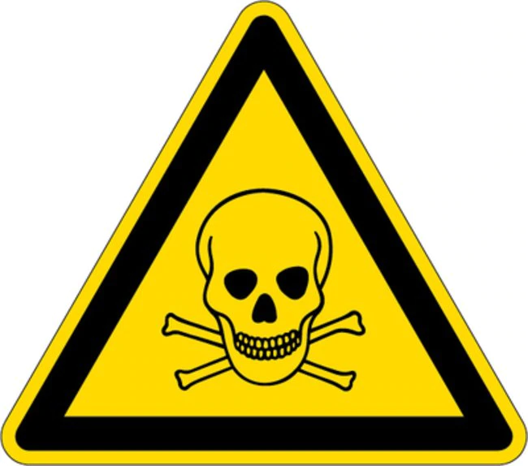

Chapter 1 MCQ Chemistry | Concepts of Chemistry
1. রসায়ন শাখায় কোন বিষয়টি নিয়ে আলোচনা করা হয়?
পদার্থের গঠন
পদার্থের ধর্ম
পদার্থের পরিবর্তন
নিচের কোনটি সঠিক?
i & ii
i & iii
ii & iii
i, ii & iii
2. কয়লার প্রধান উপাদান __।
C
S
H
O
3. প্রথম ব্যবহৃত ধাতু __।
Ag
Cu
Au
Zn
5. ব্রোঞ্জ কোন ধাতুদ্বয়ের সংকর?
Ag and Sn
Cu and Sn
Au and Ag
Sn and Zn
6. ডেমোক্রিটাস পদার্থের ক্ষুদ্রতম কণার নাম দেন __।
Atom
Particle
Molecule
Loads
7. মধ্যযুগে আরবের রসায়ন চর্চাকে বলা হত __।
Chemistry
Alchemy
Magic
Change
8. নিচের কোনটি সঠিক?
Kimi --> Al-Chimia --> Alchemy
Alchemy --> Al-Chimia --> Kimi
Al-Chimia --> Kimi --> Alchemy
Alchemy --> Kimi --> Alchemy
9. রসায়নের জনক কে?
জাবির ইবনে হাইয়ান
রবার্ট বয়েল
জন ডাল্টন
অ্যান্টনি ল্যাভসিয়ে
10. আধুনিক রসায়নের জনক কে?
জাবির ইবনে হাইয়ান
রবার্ট বয়েল
জন ডাল্টন
অ্যান্টনি ল্যাভসিয়ে
11. আম টকের জন্য কোন এসিড দায়ী?
সাকসিনিক এসিড
ম্যালেয়িক এসিড
গ্লুকোজ
A & B
12. পৃথিবী জন্মের সময় কেমন ছিল?
উত্তপ্ত
খুবই শীতল
শীতল
খুবই উত্তপ্ত
13. আম মিষ্টির জন্য দায়ী?
Fructose
ম্যালেয়িক এসিড
Gulucose
A & C
14. কেরোসিনের দহনে উৎপন্ন হয় __।
কার্বন ডাই অক্সাইড
জলীয় বাষ্প
তাপ ও আলো
সবগুলো
15. পেট ব্যথার জন্য দায়ী কোনটি?
হাইড্রোক্লোরিক এসিড
সালফিউরিক এসিড
ম্যাগনেসিয়াম ক্লোরাইড
সোডিয়াম ক্লোরাইড
16. এন্টাসিডে থাকে __।
সাকসিনিক এসিড
ম্যাগনেসিয়াম হাইড্রোক্সাইড
অ্যালুমিনায়াম হাইড্রোক্সাইড
B & C
17. বায়ুর প্রধান উপাদান __।
অক্সিজেন
হাইড্রোজেন
নাইট্রোজেন
কার্বন ডাই অক্সাইড
18. কাগজের প্রধান উপাদান __।
সেলুলোজ
এসিড
লবণ
সুক্রোজ
19. সেলুলোজ পাওয়া যায় নিচের কোনটিতে?
বাঁশ
আখ
কচুরি পানা
নিচের কোনটি সঠিক?
i & ii
i & iii
ii & iii
i, ii & iii
20. বিক্রিয়াটি সালোকসংশ্লেষনের সঠিক বিক্রিয়া কি'না?(সত্য/মিথ্যা)
সত্য
মিথ্যা
21. চকের রাসায়নিক সংকেত কোনটি?
CaSO
4
ZnCO
3
CaCO
3
MgCO
3
22. নিচের কোনটি ভারী ধাতু নয়?
লেড
ক্রোমিয়াম
মার্কারি
কপার
23. রসায়ন গবেষণা প্রকিয়ার প্রথম ধাপ কোনটি?
বিষয় নির্বাচন
পরীক্ষণ
ফলাফল
তথ্য সংগ্রহ
24. রসায়ন গবেষণা প্রকিয়ার ধাপ কয়টি?
৫ টি
৬ টি
৭ টি
৪ টি
25. ?? চিহ্নিত স্থানে কি হবে?
26. রসায়ন ল্যাবে নিরাপদ পোশাকের নাম কি?
শার্ট
অ্যাপ্রোন
মাস্ক
কোর্ট
27. চোখকে রক্ষা করার জন্য কোনটি ব্যবহার করবে?
সেফটি গুগলস
অ্যাপ্রোন
মাস্ক
হ্যান্ড গ্লাভস
28. কোনটি বিস্ফোরক পদার্থ?
টিএনটি
জৈব পার অক্সাইড
নাইট্রোগ্লিসারিন
নিচের কোনটি সঠিক?
i & ii
i & iii
ii & iii
i, ii & iii
29. নিচের কোনটি দাহ্য পদার্থ?
অ্যালকোহল
ইথার
বেনজিন
A & B

30. উপরের সাংকেতিক চিহ্নটি দ্বারা বোঝানো হয় __।
বিষাক্ত পদার্থ
বিস্ফোরক পদার্থ
উত্তেজক পদার্থ
দাহ্য পদার্থ
31. কোনটি বিষাক্ত পদার্থ নয়?
বেনজিন
ক্লোরোবেনজিন
মিথানল
নিচের কোনটি সঠিক?
i & ii
i & iii
ii & iii
কোনটিই নয়
32. নাইট্রাস অক্সাইড একটি __।
বিষাক্ত পদার্থ
বিস্ফোরক পদার্থ
উত্তেজক পদার্থ
দাহ্য পদার্থ
33. নিচের কোনটি স্বাস্থ ঝুঁকিপূর্ণ পদার্থ?
টলুইন
জাইলিন
বেনজিন
সবগুলো
34. নিচের কোন চিহ্নটি তেজস্ক্রিয় পদার্থ প্রকাশ করে?
35. নিচের কোনটি মিথ্যা?
ইউরেনিয়াম, রেডিয়াম তেজস্ক্রিয় পদার্থ
লেড, মার্কারি পরিবেশের জন্য ক্ষতিকারক পদার্থ
সালফিউরিক এসিড, সোডিয়াম হাইড্রোক্সাইড ক্ষত সৃষ্টিকারী পদার্থ
কোনটিই নয়